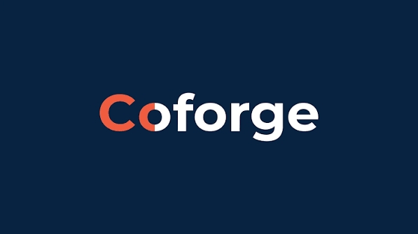
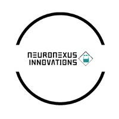
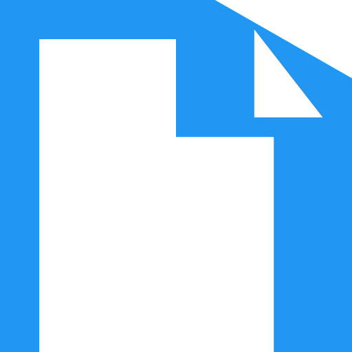
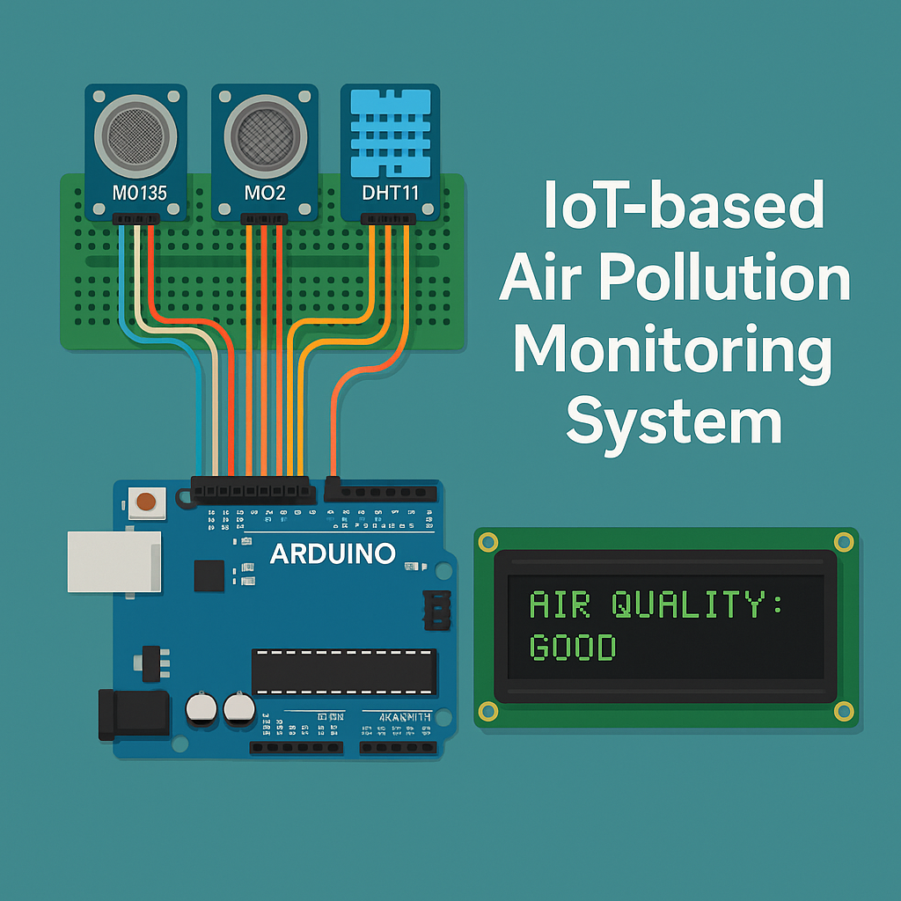
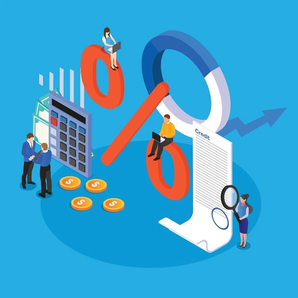

Hello! I’m Sri Venkata Prabhas Guda, a technology enthusiast from Hyderabad. I completed my B.Tech in Computer Science and Engineering with a specialization in Artificial Intelligence and Machine Learning from GRIET in 2025.
I joined Encora Innovation Labs India Pvt Ltd in August 2025, which subsequently merged with Coforge. I currently work as a Software Consultant, contributing to scalable solutions across full-stack development, backend engineering, Android development, and AI-driven systems.
I enjoy solving complex problems, learning new technologies, and turning ideas into practical software solutions. Outside technology, I enjoy watching movies, listening to music, and photography, which allows me to capture memories and moments that inspire me.
Python, Java, C, C++, SQL, Kotlin
Android Studio, Git, GitHub, PyCharm, Visual Studio Code, Maven
HTML, CSS, JavaScript, React.js, Spring Boot, Flask, REST APIs, Microservices
Android Development, Kotlin, Firebase Authentication, WorkManager
MySQL, JWT, Spring Security, BCrypt, Role-Based Authorization
Machine Learning, Deep Learning, Neural Networks, Autoencoders, K-Means, XGBoost, Anomaly Detection, Data Mining, Data Visualization, Big Data Analytics, Microsoft Excel
Arduino, IoT, PySerial, AWS, Google Cloud, IBM Watson Studio
My project experience includes an Internet Banking Portal, an E-Telemedicine Platform, an Android Notes & Task Management application, an IEEE-published Smart Grid anomaly detection and stability prediction system, and an IoT-based Air Pollution Monitoring and Prediction System.
These experiences have strengthened my expertise in full-stack development, microservices, secure application development, Android, AI/ML, IoT, and data-driven problem-solving.
I’m always excited to learn, build, solve challenging problems, and connect with people who share similar interests. Feel free to connect — I’m open to sharing ideas, exploring opportunities, and collaborating on meaningful work.

Delivering scalable software solutions across full-stack development, backend services, Android applications, and AI-powered systems.
Contributing to secure, cloud-capable applications using Java, Python, Spring Boot, REST APIs, and microservices.
Collaborating with cross-functional teams to design and improve features that support business use cases and user workflows.
Created and refined coding challenges that tested data structures, algorithms, and programming problem-solving.
Improved challenge quality by validating constraints and ensuring consistent difficulty across problem sets.
Coordinated with mentors and reviewers to maintain code quality, readability, and best practices.

Contributed to AI prototype development, model integration, and GitHub-based project deliveries.
Maintained remote collaboration and delivered project updates on schedule.
This repository contains a collection of academic projects and work that I've completed during my studies. It includes projects ranging from machine learning algorithms implementation to data analysis and visualization. Each project is accompanied by detailed documentation and code samples.
Completed Intermediate with 96.1% in Mathematics Stream in Year 2021.
Completed High School Education with a CGPA of 10 in Year 2019
Amazon Web Services
Issued Jul 2026Encora Inc.
Issued Dec 2025IBM
Issued May 2024
Jan 2026 – Mar 2026
Associated with Coforge
Developed a team-based Notes and Task Management Android application as a Capstone Project after completing 3 months of Android development training at Encora. Built the application using Kotlin and Android Studio, with functionality similar to Google Keep for creating, managing, searching, sorting, filtering, and organizing notes and todos. Implemented Google Sign-In and Firebase Authentication for user login and account management, along with persistent local data storage. Integrated WorkManager to schedule background tasks and send reminder notifications for pending or scheduled tasks, including calendar-based reminders.
Skills: Android Studio, Android Development, Kotlin, Firebase, Google Sign-In, WorkManager
View on GitHubNov 2025 – Jan 2026
Associated with Coforge
Developed a cloud-native E-Telemedicine Platform as a Capstone Project following Java Full Stack training at Encora. Built a React.js frontend and Java 17 Spring Boot backend using a modular microservices architecture. Implemented independent services for authentication, patient management, health-data management, and other core functionalities, with JWT-based authentication and authorization. Used MySQL databases with dedicated schemas for individual services and Maven for backend project management. The platform demonstrates full-stack development, REST API integration, microservices design, secure authentication, database integration, and frontend-backend communication.
Skills: JavaServer Pages, Core Java, React.js, Spring Boot, Microservices, JWT, MySQL, Maven
View on GitHubSep 2025 – Nov 2025
Associated with Coforge
Developed an individual full-stack Internet Banking Portal using Java 21, Spring Boot, React.js, and MySQL to provide secure online banking functionality. Implemented JWT-based authentication, Spring Security, BCrypt password encryption, and role-based authorization for USER and ADMIN roles. Developed RESTful APIs using a layered backend architecture with Controller, Service, Repository, DTO, Entity, and Exception Handling layers. Implemented user management, profile management, account balance inquiry, deposit and withdrawal operations, transaction history, transaction filtering, and administrative role management. Built a responsive React frontend using React Router, Axios, Bootstrap, and React Toastify, with secure frontend-backend communication through REST APIs.
Skills: Java 21, Spring Boot, React.js, JWT, Spring Security, MySQL, Bootstrap, REST APIs, GitHub
View on GitHubDec 2024 – May 2025
Associated with Gokaraju Rangaraju Institute of Engineering and Technology
Project Type: Academic Major Project (Final Year) | Published: IEEE
Developed an end-to-end Smart Grid Monitoring System designed to improve grid reliability and security through real-time stability prediction and adaptive anomaly detection. The solution leverages Autoencoders and KMeans clustering to detect cyber-physical anomalies using time-series voltage, current, and frequency data. Identifies unusual patterns, predicts instability, and flags potential system faults. The backend is built using Python (Flask) with a modular microservices architecture integrating multiple ML/DL models. A React.js dashboard visualizes live inputs, anomaly indicators, confidence scores, and historical alerts.
Key Features: Autoencoder-based anomaly detection, KMeans clustering, ANN/XGBoost stability prediction, REST APIs, React.js dashboard
Skills: Machine Learning, Deep Learning, Python, Flask, React.js, Autoencoders, KMeans
View on GitHub
Jan 2024 – Jun 2024
Associated with Gokaraju Rangaraju Institute of Engineering and Technology
Project Type: Academic Mini Project
Developed an end-to-end IoT system to monitor and forecast air pollution levels. Integrated MQ135, MQ2, and DHT11 environmental sensors with an Arduino to collect real-time environmental data including air quality, gas concentration, temperature, and humidity. Used PySerial in Python for data acquisition and logging. Implemented machine learning models to predict future pollution trends. Historical environmental data is visualized to identify pollution trends and changes in air quality over time. The system integrates IoT hardware, data processing, visualization, and machine learning into a complete monitoring and prediction solution.
Key Features: MQ135/MQ2 sensor integration, DHT11 monitoring, Arduino-based data collection, Python/PySerial communication, ML-based prediction, Historical data visualization
Skills: Internet of Things, Machine Learning, Python, Arduino, PySerial
View on GitHubDeveloped an Android news application leveraging Java and Android Studio. Integrated real-time news APIs from multiple sources for dynamic content updates. Implemented intuitive navigation and seamlessly navigable interface for optimal user experience.
Skills: Android Studio, Java, Android Development, REST APIs
View on GitHub
Engineered a machine learning model for loan risk assessment using Python and scikit-learn. Analyzed historical data to predict loan default probabilities. Implemented scalable solution to aid in financial decision-making and risk mitigation strategies.
Skills: Machine Learning, Python, scikit-learn, Data Analysis
View on GitHubDeveloped a chatbot solution utilizing IBM Watson and Watson Assistant entities. Integrated seamlessly into a WordPress webpage for interactive user engagement. Leveraged cutting-edge AI technologies to enhance conversational experiences and automate customer interactions.
Skills: IBM Watson, Watson Assistant, Python, AI, Web Integration
View on GitHub